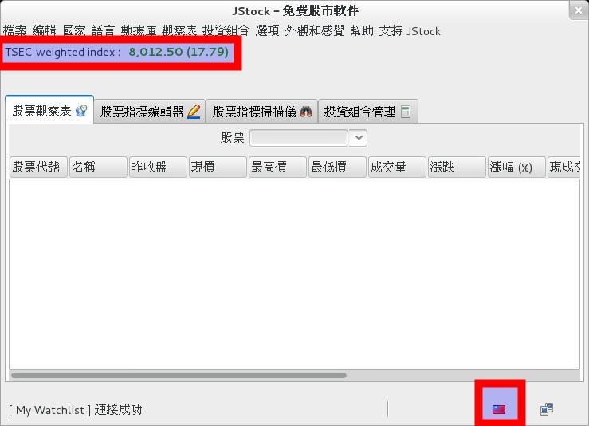
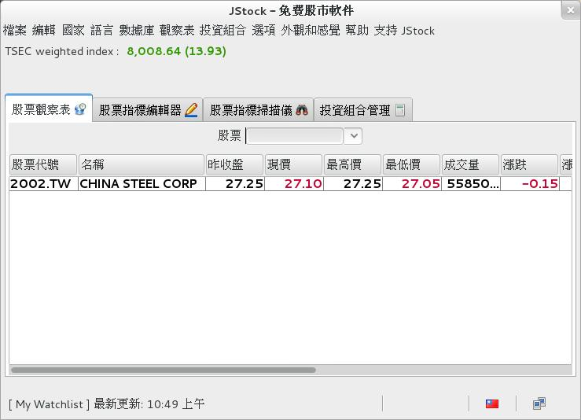
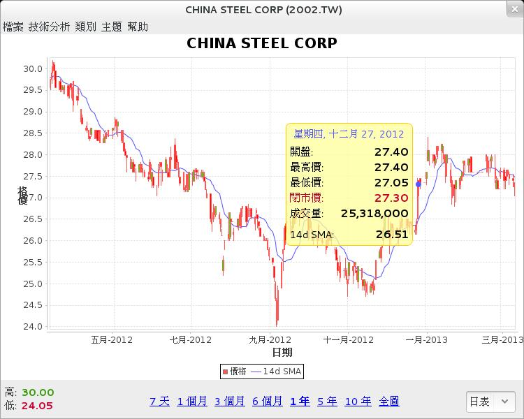
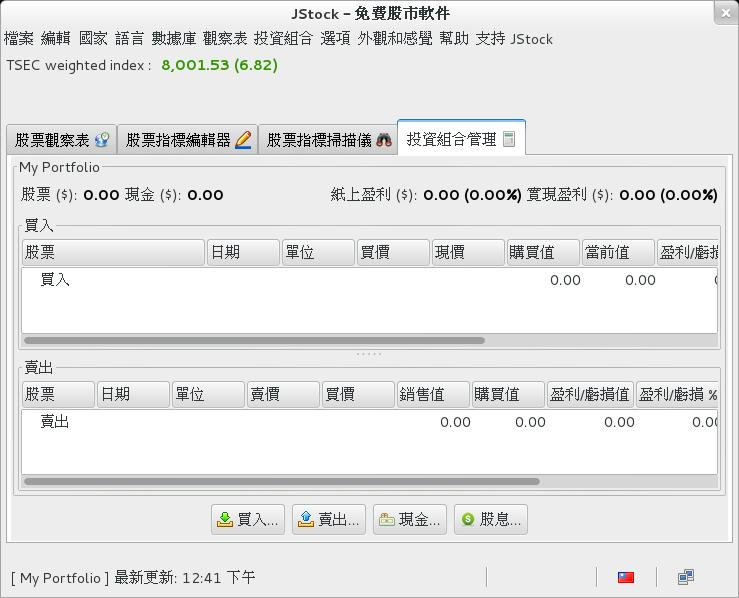
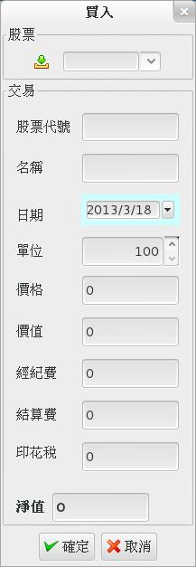
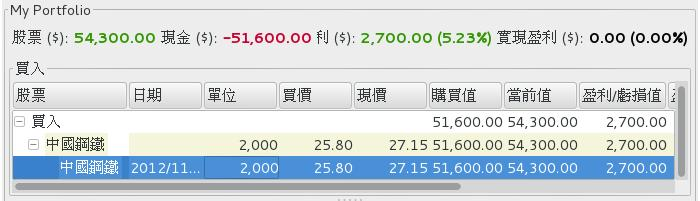

也紀念我們永遠的朋友 李士傑先生（Shih-Chieh Ilya Li）。
JStock－開源的股票看盤軟體
簡介
JStock 是一款開源的股票看盤與管理軟體。
以一般市面上的股票軟體為標準，JStock 的功能介面可說是相當地簡單。不過正因為簡單，這也反而容易上手。
您可以用 JStock 管理股票的買入賣出狀況，可以用它監視一系列您有興趣的股票，可以在股價低於或高於某數值時送出警告。此外您還可以設計一些「指標」（如 CCI 買進訊號），用這些指標來一口氣過濾分析大量的股票。當然，基本的技術分析線圖也是有的。
關於 JStock，就聽我介紹一下心得吧。
安裝與執行
JStock 支援 Windows、Mac OS X、Linux 與 Solaris。請到此處下載程式檔案：https://jstock.sourceforge.net/index.html。
如果是 Linux 版本，下載後不用安裝，直接執行 jstock.sh 就能啟用。由於本程式用 Java 撰寫，您必需要事先準備好 Java 環境。實測結果不需要 Oracle Java，Open JDK 就可以了。此外也別忘記打開 jstock.sh 的執行權限再執行。
如果是 Windows 版本，則會要您將 JStock 裝進電腦才能使用。此時若您的電腦中沒有 Java 環境，JStock 會很貼心地自動幫您下載下來安裝。不過不知為何下載安裝的版本會有亂碼，所以還是自己動手抓來裝比較乾脆。您可以從這邊（https://java.com/zh_TW/download/index.jsp）下載到最新版的 Java 環境安裝檔。
開始使用

▲ 圖1：JStock 的初始畫面
剛進入 JStock 時，我們看到的是上面這個畫面。
在一切開始前，您必需先選擇一個想要處理的股市。比方說假若您打算觀察台灣股票，就得先將 JStock 的股市設定為台灣。方法為透過最上方功能列表中的【國家】來選擇。
成功後，畫面會變成以下這樣：

▲ 圖2：當選擇了新股市時，紅框部份的內容會變更。
建立觀察表
「觀察表」是用來即時看盤用的。您可以有多個獨立的觀察表。
要將某支股票加入觀察表，只須要在股票輸入欄中輸入股票代號（如中鋼的代號是 2002.TW）然後按 Enter 就可以了。
代號可以在以下位置查詢：https://tw.stock.yahoo.com/h/kimosel.php

▲ 圖3：輸入股票號碼

▲ 圖4：將股票加入觀察表中的樣子。順便提醒一下，JStock 的漲跌採用世界上較為常見的表示法－－紅色表示下跌，綠色表示上漲。和台灣傳統正好相反！
其實在 JStock 的原始設計中，本來也可以不輸入代號而直接輸入股票名，不過在台股股市中，很遺憾地，這股票名可是全英文的，不能用中文（奇妙的是陸股可以用簡中顯示）。我正在和 JStock 開發者提交問題和部份的 Patch，可是開發者可能太忙了暫時沒理我，看看這問題之後能不能解決吧。
除了基本的數字以外，如果在觀察表中的某支股票上雙擊，還能叫出歷史線圖供我們做一些進一步的技術分析。如下：

▲ 圖5：雙擊股票名後叫出的歷史線圖。從左上角的功能選單中可以切換更多不同的線圖，K 線圖也有。
記錄投資組合
請切換到【投資組合管理】頁籤。

▲ 圖6：投資組合管理畫面，分為買入和賣出兩部份。如果看不到下方的賣出，請把視窗拉大一點。
這裡的投資組合，其實就是一個股票專用的記帳表。當您買賣股票時可以同步在這裡登記。JStock 會自動利用目前股價計算您的營利狀況、畫出不同時間賣出時的獲利圖，也可以同步記錄手續費與稅金（需到選項視窗中打開才有這功能）。
記錄的方法為：點擊下方的【買入】、【賣出】按鈕。

▲ 圖7：點買入按鈕後出現的視窗。注意：如果您沒有打開設定畫面中的「記錄經紀費」功能，經紀費等欄位就不會出現。
記錄好之後，JStock 會自動將您的資料與當前市面上的現值做比較，看您有多少帳面盈利（您還沒賣出的）與實際盈利（您已經賣出的）。
透過賣出按鈕可以做出賣出動作，操作方式與買入按鈕雷同。

▲ 圖8：JStock 會自動計算出您當前的盈利狀況。
您還可以透過右鍵選單，要求 JStock 繪出營利狀況變化圖來。算是很貼心的功能了。
掃描股票指標
JStock 對短線投資者提供了一個有趣的功能：掃描股票指標。
掃描股票指標是說，您可以指定一個或多個指標條件（如 CCI 買入訊號），然後用這個條件來掃描您的觀察表或整個股市。有命中的股票就會被篩選出來。
做法很簡單：首先進入【股票指標編輯器】頁籤，點擊【安裝】按鈕，選擇【從 JStock 服務器安裝】，再從服務器下載您需要的指標。
完成後切換到【股票指標掃描儀】頁籤，按掃描，選擇想掃描的範圍。

▲ 圖9：用 JStock 掃描整個股市尋找買入訊號。
如前所述，JStock 非常輕量，主要功能就只是這些。如果您對看盤軟體沒有更多複雜的要求，甚至早就在嫌看盤軟體太肥太慢，這就快來試試它順不順手吧！
相關連結
專欄總覽


E-Mail：contact@openfoundry.org Address：台北市南港區研究院路2段128號 中央研究院資訊科學研究所 . 隱私權條款. 使用條款

評論
因為在官網上一直找不到聯絡方法 ，比方說郵箱之類的，所以最後是 跑去 JStcok 的 Facebook 上去留言，見此：
www.facebook.com/.../
英文略破請勿見怪。
文中說的「台灣繁中 symbol table」因為放太久不小心弄 丟了……（不要笑！），不過我大 概記得怎麼做，馬上再做一份出來 後就交給您。請給我一個可用的上 傳方式，謝謝。
twse.com.tw/.../...
涵蓋上市公司一共 864 個，比原版本數量來得少，年景不 好嘖嘖……
檔案先傳到 MEGA 給您下載：
stock-info-database.csv (34 KB)
mega.co.nz/.../
如果有格式不對或理解錯誤也請告 訴我。我這邊有測試過，資料應該 是沒問題的。
另外，facebook 上用圖片標示的那個問題如今依然 存在，也請幫忙看看能否處理一下 ！
謝謝啦！
jstock.sourceforge.net/.../...
台灣投資者是喜歡中文股名還是英 文？
我從沒看過任何台灣證券商發行的 投資軟體，或電視投資頻道中出現 英文股名，也沒有在身旁的投資者 中，見過使用英文股名的人。至於 我本人是最近才意識到台股還有英 文名存在，我個人傾向於認為，中 文股名佔有壓倒性的使用率。
對在台灣投資的洋人會有困擾嗎如 果用中文股名？
這、這可難倒我了，畢竟我不是在 台灣投資的洋人，大概沒有發言的 資格（苦笑）……話說回來，如果 您需要中英文名對照表，我也可以 產生給您。
台灣用戶習慣漢語拼音輸入法嗎？
除了少數抱有特殊目的或願景而學 習過的人，台灣人絕大多數並不懂 得如何使用漢語拼音。在我的感覺 中，懂漢語拼音的比例可能低於百 分之一。當然這是我偏頗地憑印象 進行估計，僅供參考歡迎指正。
這樣就可以不用花錢用MC了
對不寫程式的正常人來說應該很容 易上手，不過對寫慣程式的人恐怕 就要適應一下了（笑）
對不寫程式的正常人來說應該很容 易上手，不過對寫慣程式的人恐怕 就要適應一下了
????此話怎麼說???
Is open Source? If yes, Where's downlod this source? Or a portion.
Could tell me? Thanks!
jstock.sourceforge.net/.../
就用力去拉 Layout 圖吧！
另：預設就有提供一些指標可用， 您可以將那些指標當作範例來參考 著寫。
trello.com/.../...
trello.com/.../...
sourceforge.net/.../1.0.7a
只好先使用英文界面新增完觀察表 以後再切換到中文版本。
另外，在Mac OSx 下每次退出程式就會當。需要Fo rce quit 才能退出。
希望能和開發者建議ㄧ下，謝謝！
感謝!!
可以看見台灣中文股名(代號有些 是.TW, 有些是.TWO
有幾個問題請教
1. 如何讓畫面顯示字型可以變化大小 (老花眼嚴重....)
2. 有沒有紀錄是否填權息資料